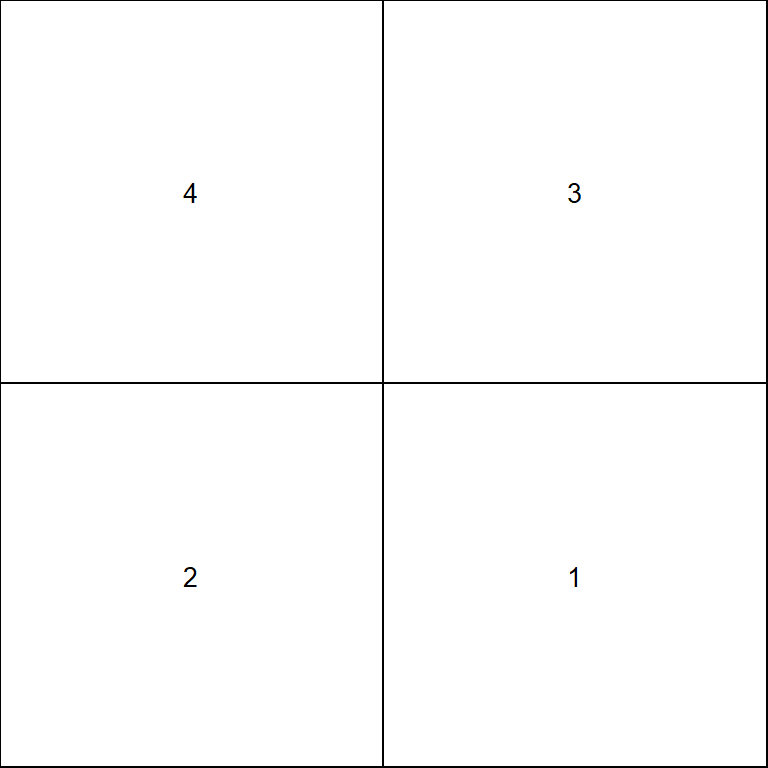
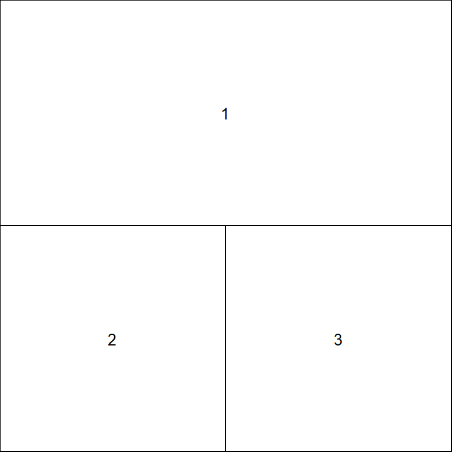
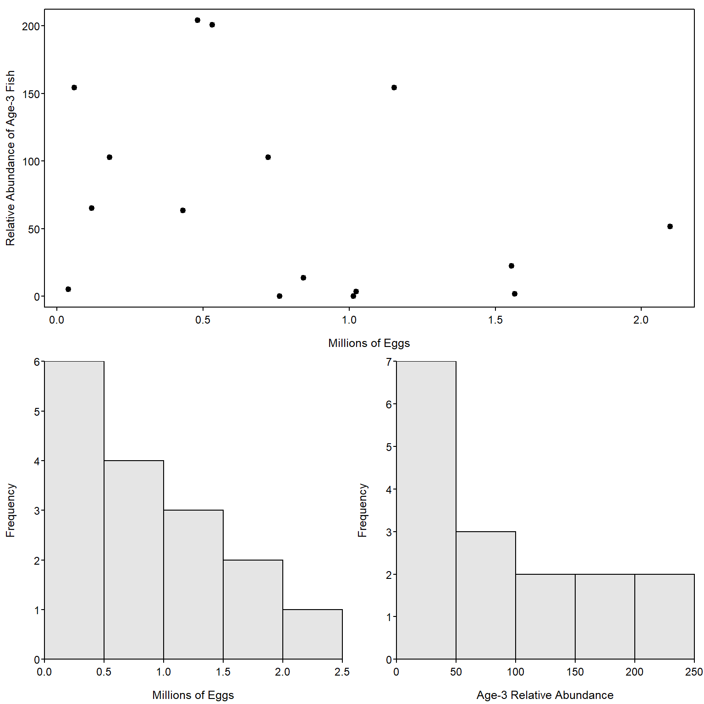
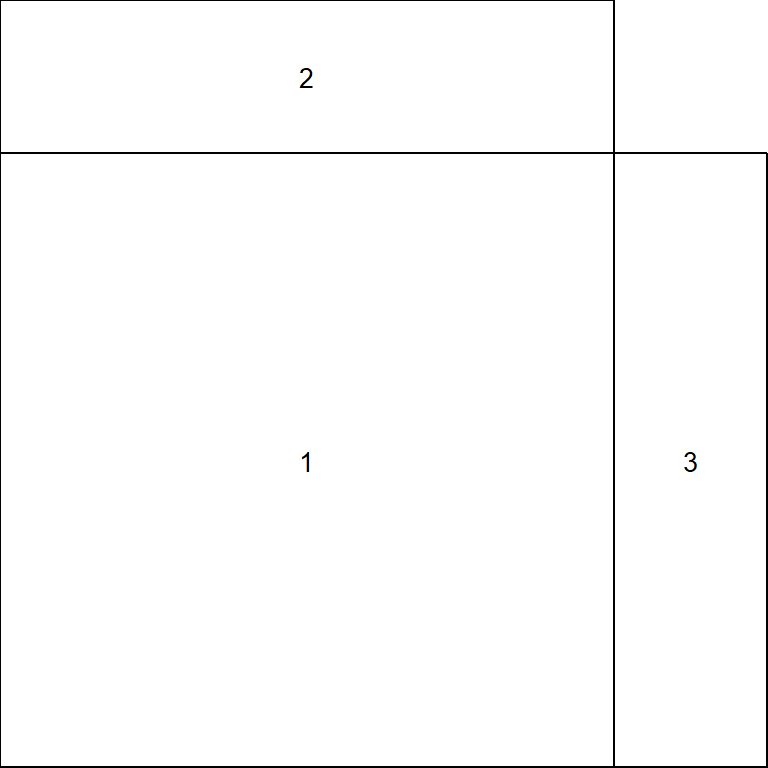
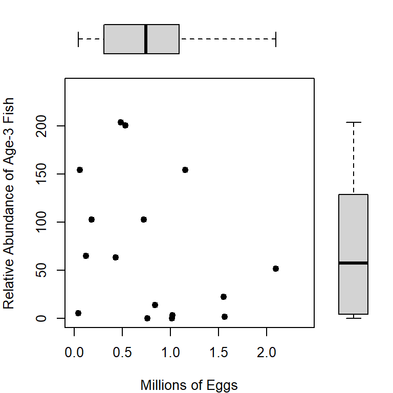
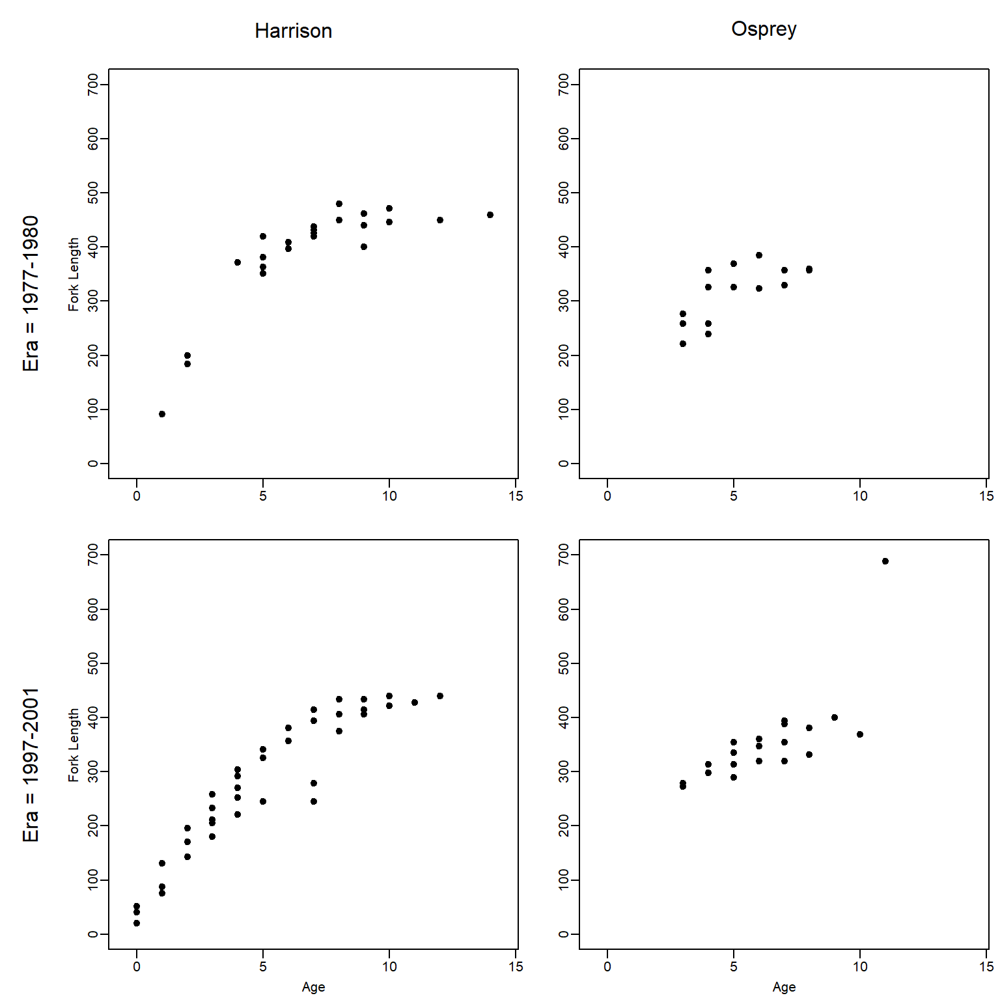

library(FSA)Complex Grid Layouts
Several methods for modifying base graphics were shown in Ogle (2016), including simple layouts (side-by-side, one-over-the-other) of multiple plots. More complex layouts (e.g., plot in first row spans two columns or unequal sized plots) are described in this supplement. Creating common x- and y-axis labels for a grid of plots is described in this supplement.
A single function is used from dplyr in this supplement; thus, :: is used instead of loading the entire package. The FSA package is loaded here to provide access to the modified hist().
The BullTroutRML2 and BloaterLH data from FSAdata used in Ogle (2016) are also used here.
data(BullTroutRML2,package="FSAdata")
data(BloaterLH,package="FSAdata")Complex Grid Layouts with layout()
The layout() function allows for more complicated organizations of plots. The only required argument to layout() is a matrix that specifies the positions, as a grid, for a series of plots. The numbers in the matrix describe which sequential plot will appear in that position. For example, the following code constructs a 2x2 grid for four plots where the first plot will appear in the lower-right corner and the last (fourth) plot will appear in the upper-left corner.
( m <- matrix(4:1,nrow=2,byrow=TRUE) )#R| [,1] [,2]
#R| [1,] 4 3
#R| [2,] 2 1layout(m)The layout.show() function is used to show the layout grid. Its only argument is the number of positions to show. The example below illustrates the layout created above.
layout.show(4)
The 2x2 grid in Figure 1 is not that interesting because that layout is just as easily constructed with mfrow= in par() (as shown in the IFAR book). Layouts, however, can also be constructed that are not “grids.” For example, the entire first row may be one plot with a second row of two plots. This layout grid is constructed by including a “1” in the first two positions of the layout matrix (Figure 2).
( m <- matrix(c(1,1,2,3),nrow=2,byrow=TRUE) )#R| [,1] [,2]
#R| [1,] 1 1
#R| [2,] 2 3layout(m)layout.show(3)
The following code fills this layout grid to produce Figure 3.
par(mar=c(3.05,3.05,0.65,0.65),mgp=c(1.9,0.3,0),tcl=-0.2,las=1,
cex.lab=0.95,cex.axis=0.9)
plot(age3~eggs,data=BloaterLH,pch=19,xlab="Millions of Eggs",
ylab="Relative Abundance of Age-3 Fish")
hist(~eggs,data=BloaterLH,xlab="Millions of Eggs")
hist(~age3,data=BloaterLH,xlab="Age-3 Relative Abundance")
The size of the plots in the layout may be controlled with height= and width=. These arguments accept vectors that represent the relative heights and widths of the rows and columns in the layout grid, respectively. For example, height=c(3,1) sets the height of the first row to be three times larger than the height of the second row. Including the respect=TRUE argument will assure that “unit distances” in the horizontal and vertical directions are treated the same. An example layout with different cell sizes is constructed below and shown in Figure 4. Also note in this example, that a zero in a cell means that that cell will not receive a plot.
( m <- matrix(c(2,0,1,3),nrow=2,byrow=TRUE) )#R| [,1] [,2]
#R| [1,] 2 0
#R| [2,] 1 3layout(m,height=c(1,4),width=c(4,1),respect=TRUE)layout.show(3)
Figure 5 is an example that fills the layout shown in Figure 4.
par(mar=c(4,4,0,0))
plot(age3~eggs,data=BloaterLH,xlim=c(0,2.4),ylim=c(0,240),pch=19,
ylab="Relative Abundance of Age-3 Fish",
xlab="Millions of Eggs")
par(mar=c(0,4,0,0))
boxplot(BloaterLH$eggs,axes=FALSE,ylim=c(0,2.4),horizontal=TRUE)
par(mar=c(4,0,0,0))
boxplot(BloaterLH$age3,axes=FALSE,ylim=c(0,240))
Finally, layout() may be used to make quite complex grids, as illustrated with the code below that produced Figure 6. Note that plot.new() creates a new blank plot in which the subsequent text() commands will place text (in this case marginal labels).
BTH1 <- BullTroutRML2 |> dplyr::filter(lake=="Harrison",era=="1977-80")
BTO1 <- BullTroutRML2 |> dplyr::filter(lake=="Osprey",era=="1977-80")
BTH2 <- BullTroutRML2 |> dplyr::filter(lake=="Harrison",era=="1997-01")
BTO2 <- BullTroutRML2 |> dplyr::filter(lake=="Osprey",era=="1997-01")
( m <- matrix(c(0,1,2,3,5,6,4,7,8),nrow=3,byrow=TRUE) )#R| [,1] [,2] [,3]
#R| [1,] 0 1 2
#R| [2,] 3 5 6
#R| [3,] 4 7 8layout(m,height=c(1,8,8),width=c(1,8,8),respect=TRUE)
par(mar=c(0,0,0,0))
plot.new(); text(0.5,0.5,"Harrison",cex=1.5)
plot.new(); text(0.5,0.5,"Osprey",cex=1.5)
plot.new(); text(0.5,0.5,"Era = 1977-1980",cex=1.5,srt=90)
plot.new(); text(0.5,0.5,"Era = 1997-2001",cex=1.5,srt=90)
par(mar=c(3.05,3.05,0.65,0.65),mgp=c(1.7,0.5,0))
xlmt <- c(-0.5,14.5)
ylmt <- c(0,700)
plot(fl~age,data=BTH1,xlab="",ylab="Fork Length",
pch=19,xlim=xlmt,ylim=ylmt)
plot(fl~age,data=BTO1,xlab="",ylab="",
pch=19,xlim=xlmt,ylim=ylmt)
plot(fl~age,data=BTH2,xlab="Age",ylab="Fork Length",
pch=19,xlim=xlmt,ylim=ylmt)
plot(fl~age,data=BTO2,xlab="Age",ylab="",
pch=19,xlim=xlmt,ylim=ylmt)
References
Ogle, D. H. 2016. Introductory Fisheries Analyses with R. CRC Press, Boca Raton, FL.